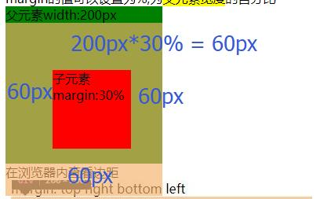
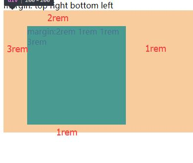
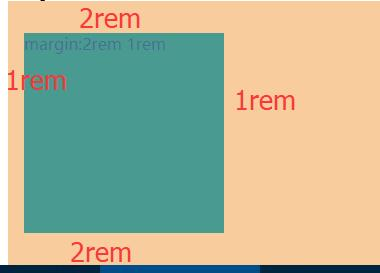
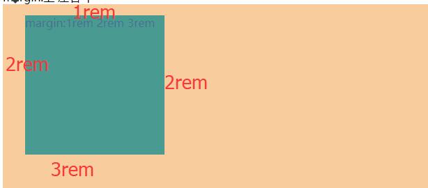
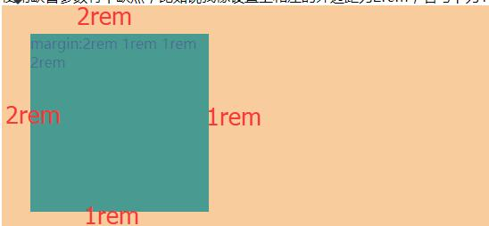

padding内边距与margin大体相同，但是不同的时margin可以设为负数,padding不可
margin 属性接受任何长度单位
margin的值可以设置为%,为父元素宽度的百分比
父元素width:200px
子元素margin:30%
在浏览器内查看边距

在不单独设置margin-left;margin-right;时与内边距的设置相同，这些值的顺序是从上外边距 (margin-top) 开始围着元素顺时针旋转的：
margin: 上 右 下 左
margin:2rem 1rem 1rem 3rem
在浏览器内查看边距

当margin只有两个参数
margin:上下 左右
margin:2rem 1rem
在浏览器内查看边距

当margin只有三个参数
margin:上 左右 下
margin:1rem 2rem 3rem
在浏览器内查看边距

使用缺省参数有个缺点，比如说我像设置上和左的外边距为2rem，右与下为1rem 但是由于没有规则能直接设置上与左(右与下同理)，所以四个参数都得写
margin:2rem 1rem 1rem 2rem
在浏览器内查看边距
